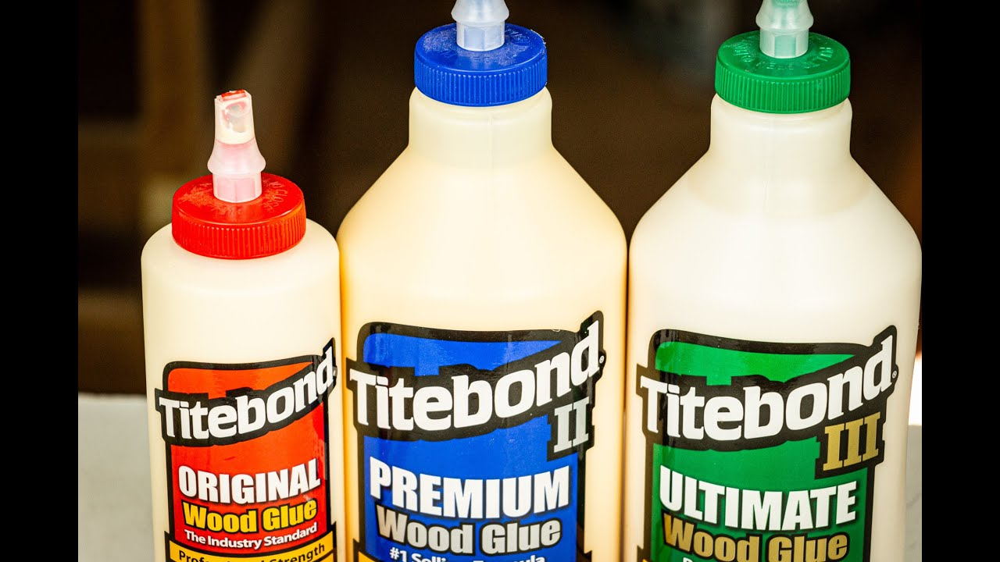

El PVA, (pegamento de acetato de polivinilo) es probablemente el pegamento para madera más común. El pegamento con PVA suele tener un color blanco o amarillento, y se conoce habitualmente como pegamento de carpintero. Su composición lo convierte en el producto ideal para muchos proyectos de montaje.
